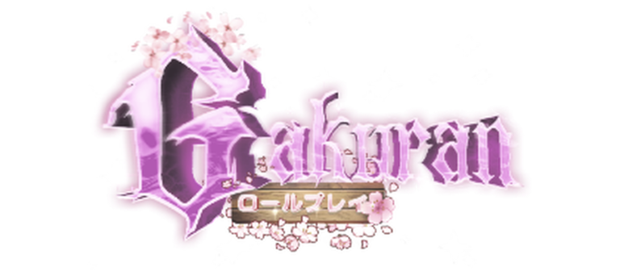
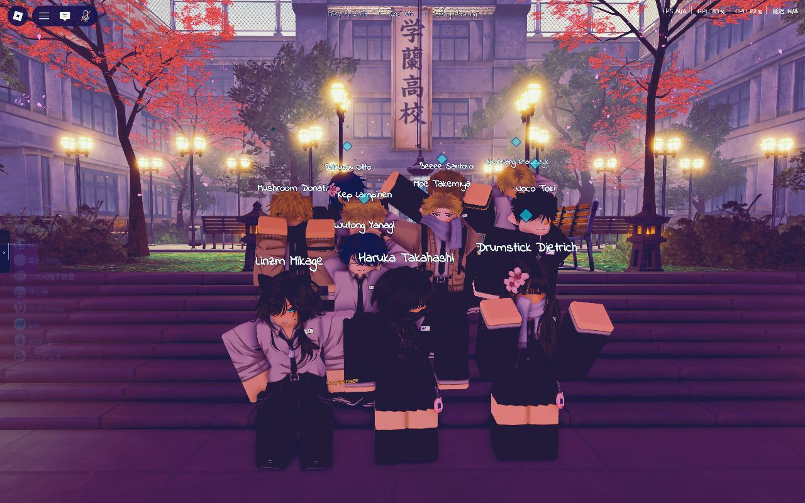

ROBLOX GAKURAN KITCHEN GANG
锅铲所向，便是疆土。本派弟子三十余人，藏身于 Roblox Gakuran（学乱）学园的阴暗灶台之后—— 白天颠勺炒菜，夜里执刀论武。刀法与刀工同宗，火候即心法。
MAIN CREW GROUP PHOTO · 顶楼决战全员集结

GAKURAN GAMEPLAY & CANTEEN BUFFS
CORE CREW · 灶台三杰鉴
本派教祖，兼 Gakuran·TaIdI AcaDemY 校长。 面与刀，皆由他起；学园与厨房，尽归他管。金锅一响，万众听令。
诚招 Roblox-Gakuran 江湖好手 · 会颠勺格斗者优先